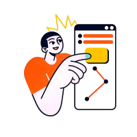

01
Empathy
Understand your users deeply. Explore their experiences, behaviours and needs before designing any solution.

1Understand
Users
Users
2Observe
Context
Context
3Map
Insights
Insights
4Summarise
Needs
Needs
Empathy Phase Overview
Your goal is to discover real user needs before moving into Define.
A1
Guided Learning Activity
- LISTEN: prepare interview questions and capture user quotes.
- OBSERVE: notice what users do, not only what they say.
- MAP: organise findings into Says, Thinks, Does and Feels.
- SUMMARISE: turn insights into clear user needs.
Quick Check
Answer 5 questions to unlock the Empathy templates.
Templates
Complete T01 to T04 to prepare your project evidence.